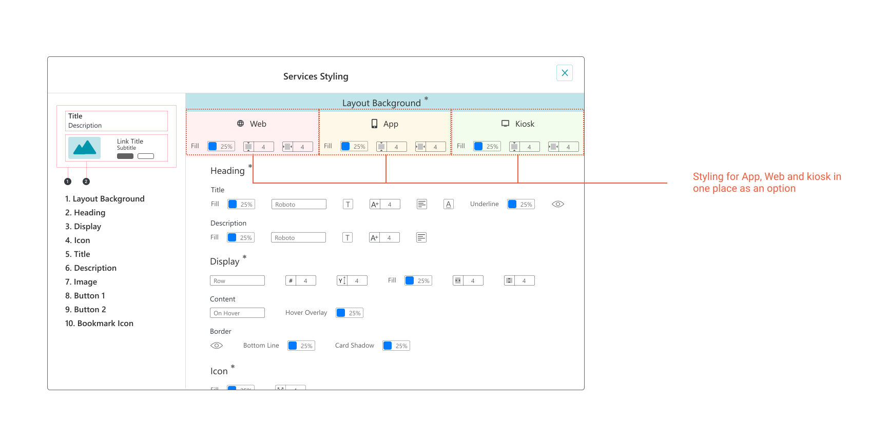
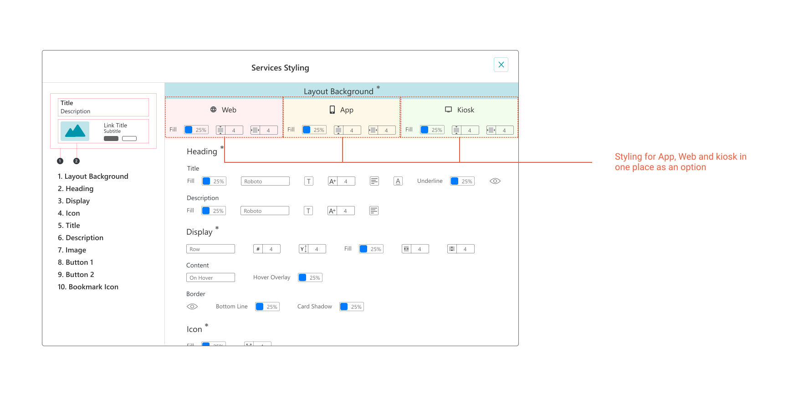

Chapter 1 - Information Architecture
C. Old Aged : Experienced/Mostly elder people in families
These user-groups were very different and non-overlapping in their needs and experience. I narrowed down our user-group to Youngsters only because they are the ones who were keen to explore new things online more. For detailed research, I conducted a survey, in which 42 people aged 20–30 participated.
Survey Insights

UX Problem -
How to provide an easy and intuitive navigation flow to users considering vast Information Architecture?


 
